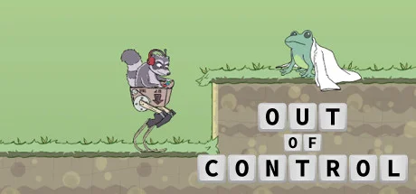

天美工作室群开发的第三人称生存射击游戏，融合变异进化机制，支持多人合作与对抗。
想象一座文明崩塌后的末日荒岛——锈蚀军事基地、辐射发电厂、被藤蔓吞噬的超市与加油站散落在海岸线与雪山之间。你赤手空拳被丢在沙滩上，口袋里只有一块石头和一根火炬。辐射区、野兽、武装 NPC 科学家和同样饥饿的其他幸存者——岛上的一切都想杀死你。腾讯天美获得 Rust 正版授权，把这套「适者生存」沙盒搬上了手机和 PC 全平台。
你扮演的不是什么被选中的英雄，只是一个连裤子都没有的普通人。从石斧砍树开始，一路熔炼金属、研究蓝图、搭建钢铁堡垒——科技树从石器时代跨越到自动炮塔与火箭发射。真正的叙事不在 NPC 嘴里，而在你与其他玩家之间：陌生人递过来的一块肉可能是善意也可能是陷阱；你花一整天建起的家，睡一觉醒来可能只剩断壁残垣。「信任」在这座岛上比硫磺还稀缺，每一次结盟都是赌注。
那次你和队友花三小时突袭对手主基地、在最后一扇铁门后发现满箱硫磺的瞬间，天美把生存射击做成了肾上腺素剧场——你玩的不是游戏，是一部由你亲手编剧的末日生存纪录片；那次你在雪山顶被直升机追杀、跳崖逃进矿洞的桥段，昼夜温差和辐射风暴让每一步都是抉择；那次 wipe 重置后你站在空旷海滩上，又捡起第一块石头的时刻——失控进化的核心不是胜利，而是「明知一切终将归零，你还愿不愿意再来一轮」？
锈蚀废土工业 x 硬核生存射击，是腾讯天美把后启示录废土工业美学（锈蚀金属墙体、辐射警示标、破损军事设施、荒野中的人造光源）和写实生存沙盒视觉语言（昼夜光影、天气粒子、资源节点高亮、建造网格系统）以及第三人称射击 HUD 界面（准星反馈、弹道轨迹、伤害数字、快捷栏轮盘）三层缝合在Rust 正版玩法授权外壳里的混血美学。底色是Rust 原版 × DayZ 末日沙盒双重血统；变异在于天美把 PC 硬核生存做成了全平台触屏友好的视觉方案——手机上也能读懂废土。
「末日生存沙盒 + 基地建造 + PvP 掠夺」视觉线跨越三十年。1995 年Westwood《命令与征服》定义基地建造美学原典。2003 年Bohemia《武装突袭》把军事写实射击做成开放世界。2009 年Mojang《Minecraft》定义沙盒建造视觉范式。2013 年Bohemia《DayZ》独立版定义末日多人生存掠夺品类母版。2018 年Facepunch《Rust》正式版把基地建造与 wipe 周期做成品类标杆——本作直接授权来源。2023 年腾讯天美获 Rust 授权启动全平台适配。2026 年《失控进化》预约破 3200 万——把硬核生存射击推向中国大众市场。